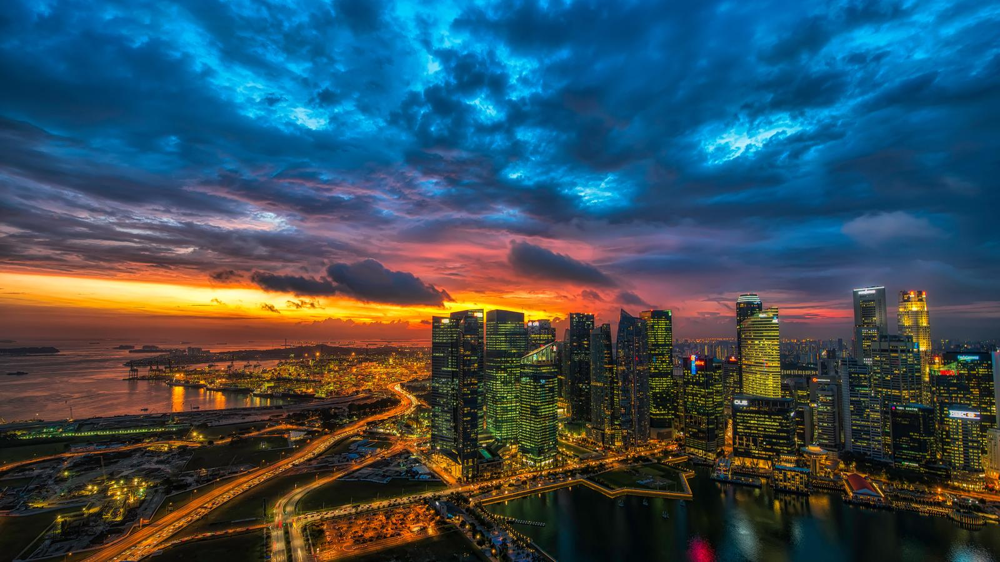
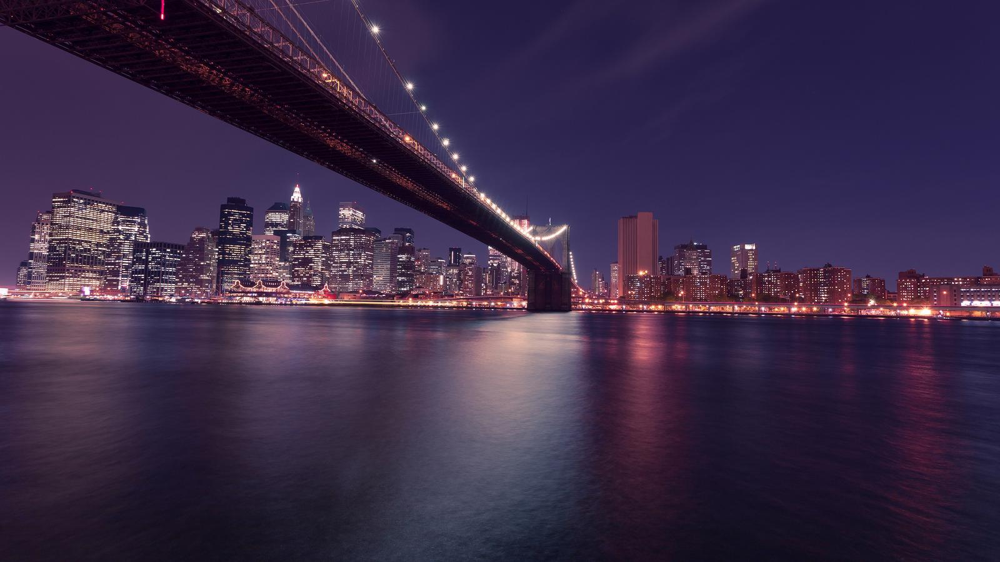
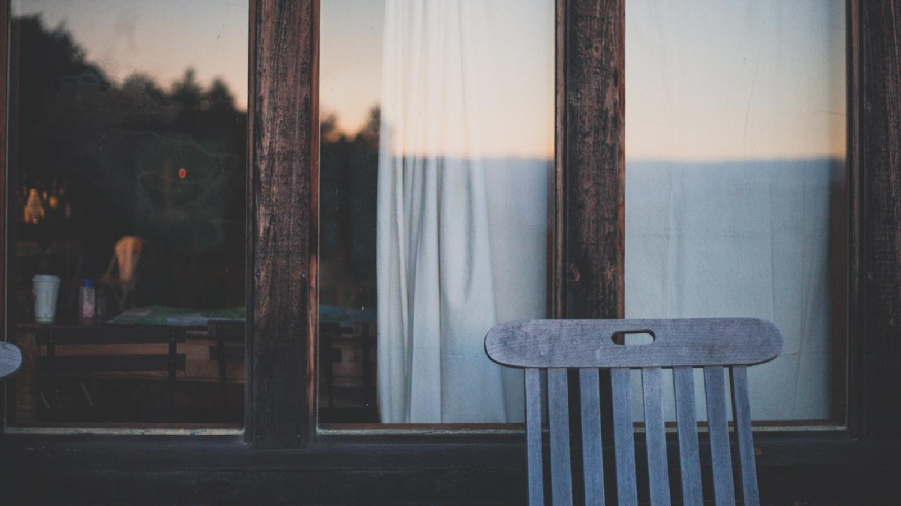
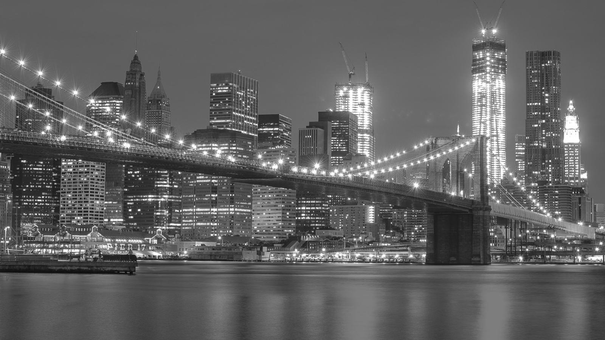
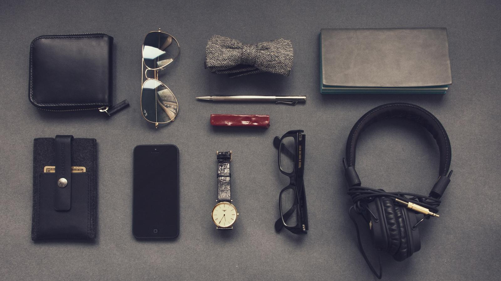
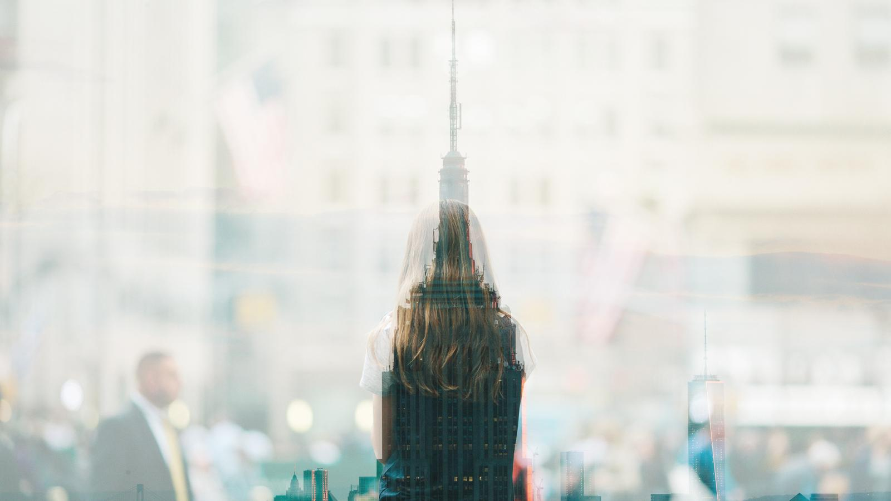
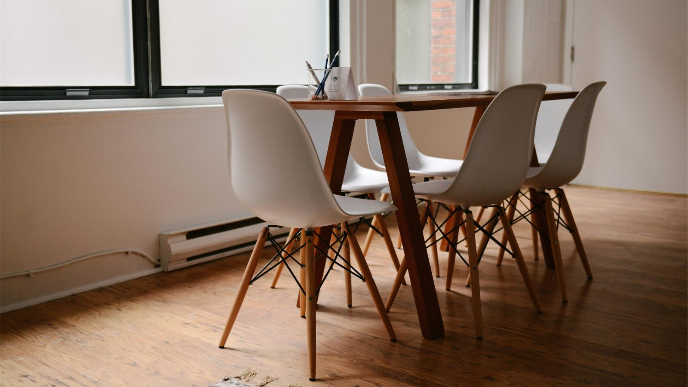
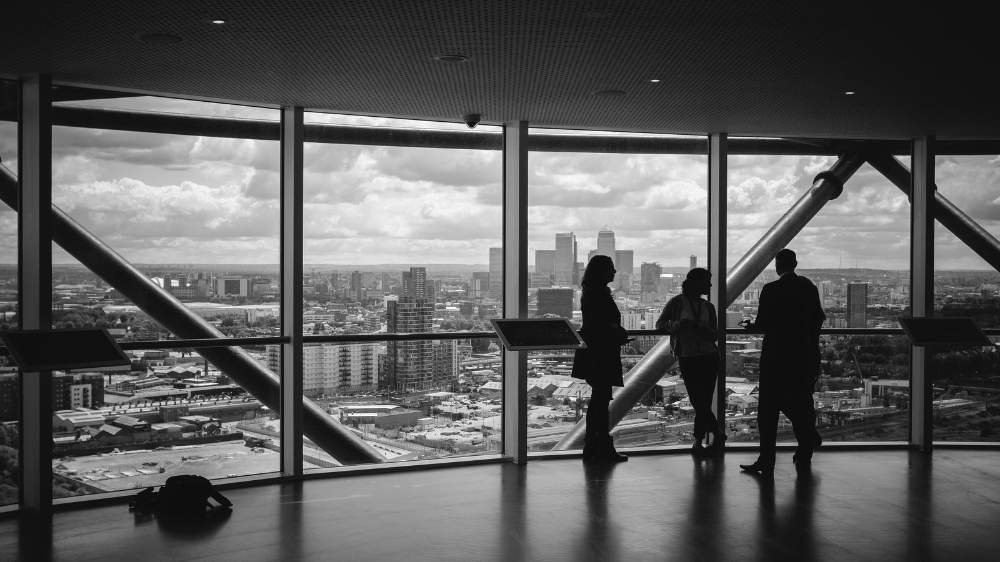

Home
Gallery
Contact
Our Team
Gallery

Vibrant city skyline at dusk by
Dmitry Sytnik
Morning cup of coffee by
Rayi Christian Wicaksono

Night cityscape with bridge overhead by
Anders Jildén

Sun and tree line reflection in antique window by
Logan Adermatt

Black and white cityscape by
Oleg Chursin

Collection of tech businessman's personal items by
Vadim Sherbakov

Blurred silhouette of a teenager and skyscraper by
Thomas BRAULT

V legged table and white modern chairs by
Breather

Business professionals in a modern office space by
Charles Forerunner